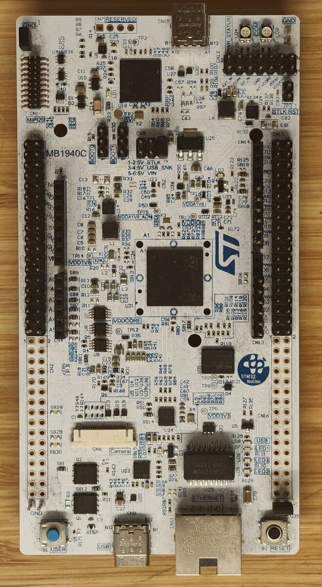

ST Nucleo-N657X0-Q
{kind=link}

Nucleo-N657X0-Q
The STM Nucleo-N657X0-Q is a development board for the STM32N657X0H3Q, an Arm Cortex-M55 with 4 MiB of on-chip AXISRAM, an on-chip Neural-ART NPU, and no internal flash. In production, code is fetched from external XSPI NOR flash and in development, the image is loaded directly into AXISRAM by the on-board ST-LINK-V3EC. Refer to the https://www.st.com/en/evaluation-tools/nucleo-n657x0-q.html website for the full product page.
Features
STM32N657X0H3Q MCU (Arm Cortex-M55, up to 800 MHz)
On-chip Neural-ART NPU accelerator
4 MiB on-chip AXISRAM (no internal flash)
External XSPI NOR flash interface
On-board ST-LINK-V3EC
3 user LEDs (LD5 red, LD6 green, LD7 blue), plus status LEDs (LD1 5V_PWR, LD4 PWR, LD9 COM)
User pushbutton (B1) and reset pushbutton
32.768 kHz crystal oscillator
USB Type-C connectors (ST-LINK and user)
ST Zio connector
ST morpho headers
Warning
This is the initial NuttX port for the STM32N6 family. The supported peripheral set is intentionally minimal: USART1 (the ST-LINK VCOM console), GPIO, RCC, PWR, the SysTick-based timer, and the three on-board user LEDs. Other on-chip peripherals and on-board features (XSPI flash boot, networking, user button, USB, MIPI, NPU, etc) are not yet wired up. The CPU is currently clocked at 200 MHz from PLL1. Raising it to the standard 600 / 800 MHz operating points is deferred to a follow-up change.
Pin Mapping
The shipped configurations map only the pins required for the serial console. All other GPIOs retain their reset state and are free for application use.
Pin |
Signal |
AF |
Notes |
|---|---|---|---|
PE5 |
USART1_TX |
AF7 |
Routed to ST-LINK VCOM (host RX) |
PE6 |
USART1_RX |
AF7 |
Routed to ST-LINK VCOM (host TX) |
Power Supply
The board is powered over either USB Type-C connector (ST-LINK or user) at 5 V. On-board regulators derive the MCU and I/O rails. See the ST user manual for the full power tree and jumper selection.
Installation
Two host tools are required:
A bare-metal Arm toolchain, e.g. the GNU Arm Embedded toolchain (
arm-none-eabi-gcc) packaged by most Linux distributions or available from Arm.STM32CubeProgrammer for loading images into AXISRAM over the on-board ST-LINK.
Building NuttX
From the top of the NuttX source tree:
$ ./tools/configure.sh nucleo-n657x0-q:<config>
$ make
At the end of the build, nuttx.bin is the raw image that the
flashing step below loads into AXISRAM.
The toolchain selection can be changed via make menuconfig.
Flashing
The board boots in development mode: the on-board ST-LINK loads the
image directly into AXISRAM at 0x34000400 (the first 1 KiB is
reserved for the boot ROM header) and starts execution there. Signed
XSPI flash boot via a first-stage bootloader is not yet supported.
Use STM32CubeProgrammer’s CLI to load and run nuttx.bin:
$ STM32_Programmer_CLI -c port=SWD mode=UR -halt \
-d nuttx.bin 0x34000400 \
-w32 0xE000ED08 0x34000400 \
-g 0x34000400
The -w32 write retargets VTOR to the SRAM image before the -g
jump, so the Cortex-M55 starts from the NuttX vector table rather
than the boot ROM’s.
Configurations
Each configuration is selected with:
$ ./tools/configure.sh nucleo-n657x0-q:<config>
Unless otherwise noted, console output is accessed via ST-LINK (USART1) at 115200 8N1.
nsh
Minimal NuttShell configuration. Boots into the NSH prompt via
ST-LINK and exposes the built-in commands plus
getprime-style apps
selectable via make menuconfig.
ostest
Builds the NSH configuration with apps/testing/ostest added. Run ostest from the
NSH prompt to exercise the core RTOS primitives (tasks, mutexes,
semaphores, signals, message queues, POSIX timers, condition
variables, scheduling). Used as the smoke test.
leds
Builds the NSH configuration with CONFIG_ARCH_LEDS disabled and
the userled lower-half driver and apps/examples/leds enabled, so
the three on-board LEDs are exposed at /dev/userleds and can be
exercised from userspace. Run leds from the NSH prompt to spawn
the daemon that cycles through the LEDs.
License Exceptions
None.
References
[RM0486] STM32N647/657xx Arm®-based 32-bit MCUs reference manual
[UM3417] STM32N6 Nucleo-144 board (MB1940) user manual
[ES0620] STM32N657 errata sheet